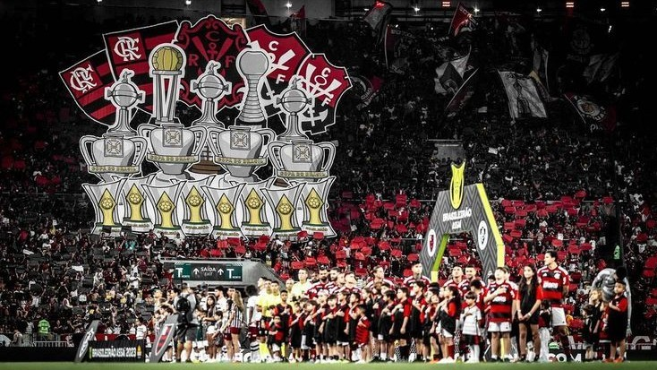

Welcome to the Biggest Club in the World
A Century of Passion
The Foundation and Golden Legends
Founded on November 17, 1895, as a rowing club to challenge local rivals in the Guanabara Bay, Clube de Regatas do Flamengo quickly evolved into a multi-sport powerhouse, officially establishing its football department in 1911. Over the decades, the club became a cultural phenomenon, deeply rooted in the working-class identity of Rio de Janeiro. This passion culminated in the golden era of the 1980s, where Flamengo claimed international supremacy under the genius of Zico—the club's ultimate icon—alongside legendary figures like Júnior, Adílio, and Leandro, who conquered South America and defeated Liverpool 3-0 to capture the 1981 Intercontinental Cup.
The Financial Resurrection (2010 – 2019)
Despite its massive popularity and historical glory, the turn of the century brought severe financial instability, ballooning debts, and administrative chaos that threatened the club's future. Between 2013 and 2019, a radical management restructuring took place; a new board of directors implemented strict austerity measures, modernized corporate governance, and systematically paid off millions in debt. This historic institutional discipline sacrificed immediate on-pitch results but successfully rebuilt Flamengo's financial credibility, transforming the club from a bankrupt giant into the wealthiest and most self-sufficient football enterprise in South America by 2019.
The Modern Powerhouse
Today, Clube de Regatas do Flamengo stands at the absolute pinnacle of domestic and continental football, operating as a benchmark for professional sporting success. Backed by an unstoppable financial structure and a global fanbase exceeding 40 million loyal supporters, the institution consistently fields elite squads capable of fighting for every major trophy. With a record-breaking four Copa Libertadores crowns, eight Brasileirão national titles, and an unmatched regional dominance, Flamengo is no longer just a football team; it is an undisputed, modern sporting empire driven by a continuous hunger for monumental glory.